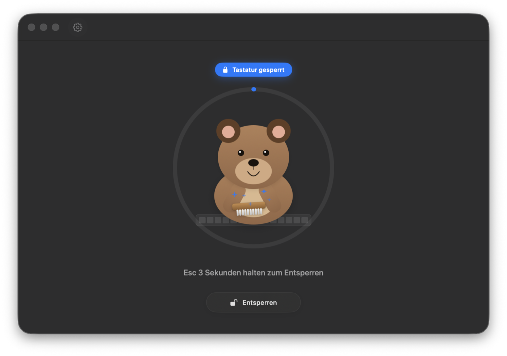

CleanYourBoard
Lock your Mac keyboard. Clean it in peace.
⬇ Download for macOS
Blocks everythingF1–F12, brightness, volume and media keys included.
Friendly bearAnimated scrubbing so you see the app is working.
Mouse stays freeClick Unlock anytime — no lock-out by accident.
Esc to escapeHold Esc 3 s if your mouse is busy.
Display stays awakeNo more black screens mid-cleaning.
Seven languagesEN · DE · FR · ES · IT · JA · 中文